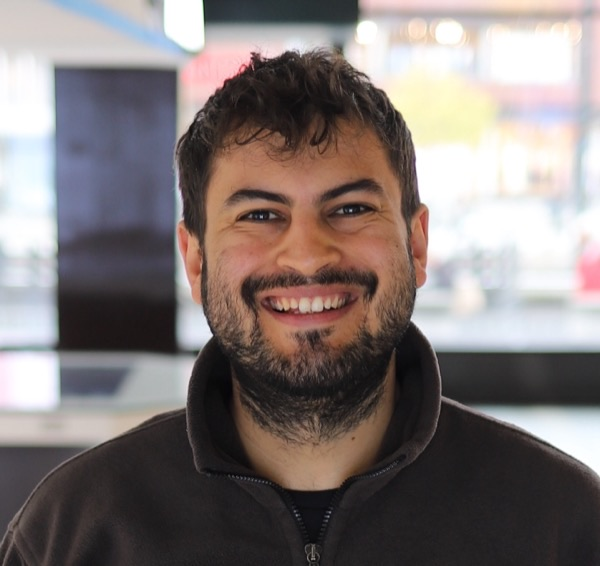

I am a phd candidate in economics at university of milan-bicocca
working on health and agriculture issues in developing countries.
work in progress
-
cash crops and birth spacing: how short-term income variations influence both desired and actual birth spacing among rural Ugandan households
-
missing markets: how to improve coffee farmers' position in the global value chain
-
beaney: an ml-driven app to give tailored advice to coffee farmers
-
panic at the hospital: an economic appraisal of violence against Italian healthcare workers